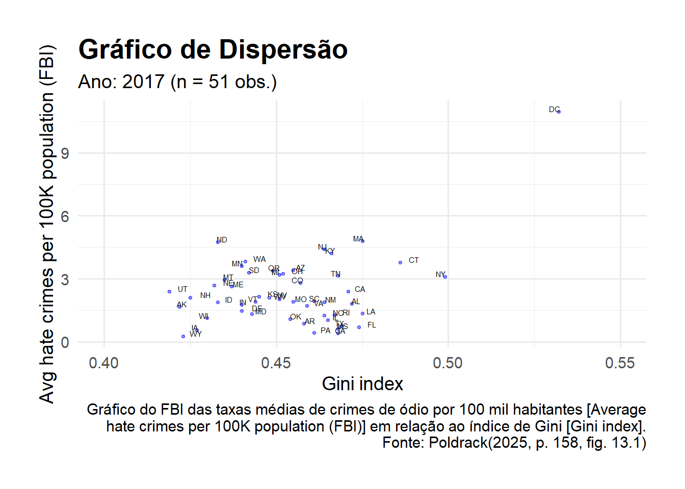
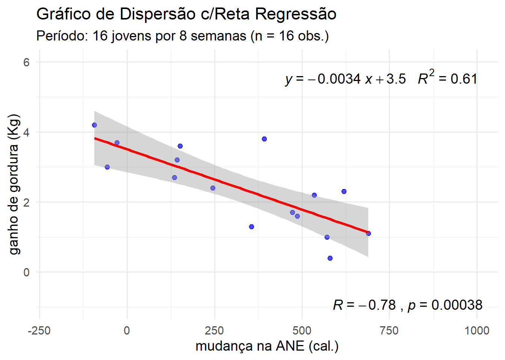

A maioria das pessoas conhece a ideia de correlação e, neste capítulo, apresentaremos uma compreensão mais formal desse conceito normalmente usado e incompreendido. (Poldrack, 2025 , cap. 13, p. 157).
5.1 Objetivos da Aprendizagem
▶Descrever o conceito de coeficiente de correlação e sua interpretação.
▶Calcular a correlação entre duas variáveis contínuas.
▶Descrever o efeito de pontos de dados com outliers e como abordá-los.
▶Descrever as possíveis influências causais que podem originar uma correlação observada. (Poldrack, 2025 , p. 157).
5.1.1 Carregar pacotes e conjunto de dados .
Código
```{r}library(tidyverse)library(ggplot2)library(fivethirtyeight)library(BayesFactor)library(bayestestR)library(cowplot)library(knitr)library(DiagrammeR)library(htmltools)library(webshot)theme_set(theme_minimal(base_size =14))set.seed(123456) # set random seed to exactly replicate results# load the NHANES data librarylibrary(NHANES)# drop duplicated IDs within the NHANES datasetNHANES <- NHANES %>% dplyr::distinct(ID,.keep_all=TRUE)NHANES_adult <- NHANES %>%drop_na(Weight) %>%subset(Age>=18)```
5.2 Crimes de Ódio e Desigualdade de Renda: Um Exemplo
Em 2017, o site fivethirtyeight.com publicou uma matéria chamada “Higher Rates of Hate Crimes Are Tied to Income Inequality [Taxas Mais Altas de Crimes de Ódio Estão Relacionadas à Desigualdade de Renda]”, que explorava a relação entre a prevalência de crimes de ódioe a desigualdade de rendaapós a eleição presidencial de 2016 nos Estados Unidos.
A matéria apresentava uma análise de dados sobre crimes de ódio, feita peloFBI e pelo Southern Poverty Law Center, a partir da qual relatava o seguinte:
Constatamos que a desigualdade de renda foi o fator determinante mais significativo dos crimes e incidentes de ódio, ponderados pela população dos Estados Unidos. (Majumder, 2017)
Os dados para essa análise estão disponíveis como parte do pacote fivethirtyeight do software estatístico R, o que facilita o acesso.
A análise apresentada na matéria focava a relação entre a desigualdade de renda (definida por uma medida chamada índice de Gini ou coeficiente de Gini — confira o apêndice deste capítulo para mais detalhes) e a prevalência de crimes de ódio em cada estado.
Essa relação é mostrada na Figura 13.1.
Código
```{r}hateCrimes <- hate_crimes %>%mutate(state_abb = state.abb[match(state, state.name)]) %>%drop_na(avg_hatecrimes_per_100k_fbi)hateCrimes$state_abb[hateCrimes$state=="District of Columbia"] ='DC'ggplot(hateCrimes,aes(gini_index,avg_hatecrimes_per_100k_fbi,label=state_abb)) +geom_point(size =0.8, color ="blue", alpha=0.4) +geom_text(aes(label=state_abb), hjust=0, vjust=0, size =2, # tamanho do textoposition =position_jitter(width =0.003, height =0.003)) +theme(plot.title =element_text(size =20, face ="bold")) +xlab('Gini index') +ylab('Avg hate crimes per 100K population (FBI)') +labs(title ="Gráfico de Dispersão",subtitle ="Ano: 2017 (n = 51 obs.)",x ="Gini index",y ="Avg hate crimes per 100K population (FBI)",caption ="Gráfico do FBI das taxas médias de crimes de ódio por 100 mil habitantes [Average\nhate crimes per 100K population (FBI)] em relação ao índice de Gini [Gini index].\nFonte: Poldrack(2025, p. 158, fig. 13.1)" ) +theme(plot.margin =unit(c(1,1,1,1), "cm")) +xlim(0.40, 0.55)```

Analisando os dados, parece possível existir uma relação positiva entre as duas variáveis.
Como podemos quantificá-la?
5.3 Covariância e Correlação
Uma maneira de quantificar a relação entre duas variáveis é a covariância.
Lembre-se de que a variânciaamostral para uma única variável é calculada como a diferença média quadrática entre cada ponto de dados e a média, dividida pelo tamanho amostral menos 1:
Esse valor estará longe de zero quando x e y forem ambos altamente desviantes da média; se forem desviantes na mesma direção, a covariância será positiva, enquanto se forem desviantes em direções opostas, a covariância será negativa.
Vejamos primeiro um exemplo prático.
Os dados são mostrados na tabela, juntamente com seus desvios individuais da média e seus produtos cruzados.
Código
```{r}# create data for toy example of covarianceset.seed(123456789)df <-tibble(x =c(3, 5, 8, 10, 12)) %>%mutate(y = x +round(rnorm(n =5, mean =0, sd =2))) %>%mutate(x_dev = x -mean(x),y_dev = y -mean(y) ) %>%mutate(crossproduct = x_dev * y_dev)covXY <-sum(df$crossproduct) / (nrow(df) -1)corXY <-sum(df$crossproduct) / ( (nrow(df) -1) *sd(df$x) *sd(df$y) )# calcular Z-escores: Z_x e Z_ydf <- df %>%mutate(z_x = x_dev /sd(x),z_y = y_dev /sd(y) ) %>%mutate(z_xy = z_x * z_y)corZxy <-sum(df$z_xy) / ( nrow(df) -1 )cat("Dados para o exemplo ilustrativo de Covariância:\n")cat("Covariância covXY = ", covXY , "\n")cat("Correlação corXY = ", corXY , "\n")cat("Correlação corZxy = ", corZxy, "\n")df```
No exemplo ilustrativo da Tabela 13.1, o seu valor é de 0,89 [no livro texto].
No nosso exemplo acima a correlação é: 0.889221. Obtendo o mesmo resultado por dois métodos distintos equivalentes: a) dividindo a conavirância pelos produtos dos desvios padrão de x e de y; b) pelo produto cruzado dos Z-escores de x e de y, dividido pelo número de grausde liberadade da amostra (n-1).
O coeficiente de correlação é útil porque varia entre −1 e 1, independentemente da natureza dos dados, sendo facilmente interpretável — na verdade, já o tínhamos visto quando analisamos os tamanhos dos efeitos no Capítulo 10.
Conforme analisado, uma correlação de 1 indica uma relação linear perfeita, uma correlação de −1 indica uma relação negativa perfeita e uma correlação de 0 indica nenhuma relação linear.
5.4 Reta de Regressão: Um Exemplo
Por que algumas pessoas acham fácil permanecer magras? Seguindo o processo de quatro passos, mostramos o relato de um estudo que clareia um pouco o assunto de ganho de peso.
ESTABELEÇA: algumas pessoas não ganham peso, mesmo quando comem muito. Talvez a agitação e outras “atividades de não exercício” (ANE) expliquem por quê. De fato, algumas pessoas podem, espontaneamente, aumentar a atividade de não exercício quando comem mais, reduzindo, assim, a quantidade de peso que ganham com o excesso de comida. Para investigar o efeito de ANE no ganho de peso, pesquisadores, deliberadamente, superalimentaram 16 jovens adultos saudáveis durante oito semanas. Mediram o ganho de gordura (em quilogramas) e, como variável explicativa, mudanças no uso da energia (em calorias) em atividades diferentes de exercício deliberado – agitação, vida diária e semelhantes. A mudança no uso da energia foi a energia medida no último dia do período de oito semanas, menos o uso de energia medida no dia antes do início da superalimentação. Eis os dados:1
As pessoas com os maiores aumentos em ANE tendem a ganhar menos gordura?
PLANEJE: faça um diagrama de dispersão dos dados e examine o padrão. Se for linear, use a correlação para medir sua intensidade e desenhe uma reta de regressão no diagrama para predizer o ganho de gordura a partir de mudança na ANE.
RESOLVA: a Figura 5.1 é um diagrama de dispersão desses dados. O gráfico mostra uma associação linear negativa ligeiramente forte, sem valores atípicos. A correlação é r = –0,7786. A reta no gráfico é uma reta de regressão para predição do ganho de gordura a partir de mudanças na ANE.
CONCLUA: pessoas com maiores aumentos em ANE realmente ganham menos gordura. Para acrescentarmos mais a essa conclusão, devemos estudar retas de regressão com mais detalhe.
No entanto, já podemos usar a reta de regressão para predizer o ganho de gordura a partir do valor de ANE. Suponha que a ANE de um indivíduo cresça de 400 calorias quando ele se superalimenta. “Suba e vire” no gráfico da Figura 5.1. A partir de 400 calorias no eixo x, suba até a reta de regressão e, então, vá para o eixo y. O gráfico mostra que o ganho de gordura predito é um pouco maior do que 2 quilogramas. (MOORE; NOTZ; FLIGNER, 2023 , cap. 5, exemplo 5.1, p. 101)
5.4.1 carregar
Código
```{r}library(readr)# Importar como tibble o arquivo de dentro da pasta chamada: dat/csv.gangord <- readr::read_csv(file ="dat/csv/eg05-01fatgain.csv",# delim = ",",quote ="\"",locale =locale(decimal_mark =".",encoding ="UTF-8" ) )# cat - Concatenate And Printcat("\n") # imprime no console (saída) uma linha em brancocat("Estrutura do objeto R denominado gangord:\n")str(gangord)cat("\n")cat("Nomes das 2 colunas do objeto gangord:\n")names(gangord)# [1] "NEA" "Fat"# NEA: NonExercise Activit# Fat: Fat gaingangord # tibble: 6 obs × 2 colunas (variáveis)# renomear variáveis: portuguêsnames(gangord) <-c("ANE", # Atividade de Não Exercício (cal)"gangor") # Ganho de gordura (kg)gangord # tibble: 6 obs × 2 colunas (variáveis)```
```{r}library(ggpubr)# dados do data frame chamado gangordsummary(gangord$ANE)summary(gangord$gangor)# Gráfico de dispersão com reta de regressão linear, r e R²ggplot(gangord, aes(x = ANE,y = gangor)) +geom_point(color ="blue", alpha =0.7) +# pontos de dispersãogeom_smooth(method ="lm", se =TRUE, color ="red") +# reta de regressão linear com intervalo de confiançastat_cor(aes(label =paste(..r.label.., ..p.label.., sep ="~`,`~")),label.x =Inf, label.y =-Inf, hjust =1.1, vjust =-0.5, size =5) +stat_regline_equation(aes(label =paste(..eq.label.., ..rr.label.., sep ="~~~")),label.x =Inf, label.y =Inf, hjust =1.1, vjust =2, size =5) +labs(title ="Gráfico de Dispersão c/Reta Regressão",subtitle ="Período: 16 jovens por 8 semanas (n = 16 obs.)",x ="mudança na ANE (cal.)",y ="ganho de gordura (Kg)" ) +ylim(-1, 6) +xlim(-200, 1000) +theme_minimal(base_size =14) # tema visual limpo e fonte maior```
Min. 1st Qu. Median Mean 3rd Qu. Max.
-94.0 141.0 373.5 324.8 544.0 690.0
Min. 1st Qu. Median Mean 3rd Qu. Max.
0.400 1.525 2.350 2.388 3.300 4.200

5.4.3 predição
Recolocando uma questão de pesquisa subsequente:
Quanta ANE (cal) é necessária para reduzir o granho de peso a zero mesmo sob uma dieta hipercalórica?
Código
```{r}library(ggpubr)library(ggplot2)# ajuste do modelolm_mod <-lm(gangor ~ ANE, data = gangord)# intervalosx_obs <-range(gangord$ANE, na.rm =TRUE)x_plot <-c(-200, 1050) # limites desejados na visualização# sequências para cada segmentoleft_seq <-seq(x_plot[1], x_obs[1], length.out =100)mid_seq <-seq(x_obs[1], x_obs[2], length.out =200)right_seq<-seq(x_obs[2], x_plot[2], length.out =100)# prediçõesleft_df <-data.frame(ANE = left_seq, fit =predict(lm_mod, newdata =data.frame(ANE = left_seq)))mid_pred <-predict(lm_mod, newdata =data.frame(ANE = mid_seq), interval ="confidence", level =0.95)mid_df <-data.frame(ANE = mid_seq, fit = mid_pred[, "fit"], lwr = mid_pred[, "lwr"], upr = mid_pred[, "upr"])right_df <-data.frame(ANE = right_seq, fit =predict(lm_mod, newdata =data.frame(ANE = right_seq)))# plotggplot(gangord, aes(x = ANE, y = gangor)) +geom_point(color ="blue", alpha =0.7) +# IC apenas no trecho observadogeom_ribbon(data = mid_df, aes(x = ANE, ymin = lwr, ymax = upr), fill ="red", alpha =0.15, inherit.aes =FALSE) +# linha sólida no trecho observadogeom_line(data = mid_df, aes(x = ANE, y = fit), color ="red", size =1) +# extensões tracejadas esquerda e direitageom_line(data = left_df, aes(x = ANE, y = fit), color ="red", linetype ="dashed", size =1) +geom_line(data = right_df, aes(x = ANE, y = fit), color ="red", linetype ="dashed", size =1) +# estatísticas (r, p, equação) continuam funcionandostat_cor(aes(label =paste(..r.label.., ..p.label.., sep ="~`,`~")),label.x =Inf, label.y =-Inf, hjust =1.1, vjust =-0.5, size =5 ) +stat_regline_equation(aes(label =paste(..eq.label.., ..rr.label.., sep ="~~~")),label.x =Inf, label.y =Inf, hjust =1.1, vjust =2, size =5 ) +labs(title ="Gráfico de Dispersão c/Reta Regressão extrapolada",subtitle ="Período: 16 jovens por 8 semanas (n = 16 obs.)",x ="mudança na ANE (cal.) [predição: (x=1029.4, y=0)]",y ="ganho de gordura (Kg)" ) +coord_cartesian(xlim = x_plot, ylim =c(-1, 6), expand =FALSE) +# ponto adicional fixo em (1029.4, 0)geom_point(data =data.frame(ANE =1029.4, gangor =0),mapping =aes(x = ANE, y = gangor),color ="black", alpha =1.0, size =3, shape =3,inherit.aes =FALSE ) +theme_minimal(base_size =14)```
Observa-se, no gráfico acima, que o intercepto da reta de regressão é: +3,5 Kg. ou seja, é a estimativa do ganho de gordurase o valor de ANEnão muda durante as 2 semanas que a pessoa superalimenta-se.
E que a inclinação da reta de regressão é: -0,0034 (um número puro ou sem unidade). Equivale à tangente do ângulo que essa reta forma com o eixo x.
Isso significa que, quando a variável explicativa Xaumentar 1 unidade, no caso, aumentar+1,0 cal, então a variável resposta Y, segundo a reta de regressão de mínimos quadrados, irá diminuir, em média,-0,0034 Kg = -3,4 g.
Ou seja, para diminuir 1 kg na variável ganho de gordura sob dieta hipercalórica, é necessário aumentar a ANE:
\[
-0.0034 x = -1.0 \text{ kg} \Rightarrow x = \frac{1.0}{0.0034} \Rightarrow x = +294.2 \text{ cal}
\]
Avisoinclinação da rela de regressão
Não se pode dizer quão importante é uma relação pelo simples exame do tamanho da inclinação da reta de regressão. (MOORE; NOTZ; FLIGNER, 2023 , cap. 5, p. 102)
Todavia a amostra de n= 16 jovens é pequena.
Portanto sujeita à maior variabilidade amostral, aquela variação nos dados observada de amostra para amostra.
Isso implica uma reflexão sobre a predição.
Voltando à questão: Quanta ANE (cal) é necessária para reduzir o granho de peso a zero mesmo sob uma dieta hipercalórica?
Então queremos descobrir: qual valor de \(x\) para que \(\hat{y}=0\) (lê-se ypsilon chapeu)?
\[
-0.0034 x + 3.50 = 0.0 \text{ kg} \Rightarrow x = \frac{3.50}{0.0034} \Rightarrow x = +1029.4 \text{ cal}
\]
O quanto podemos confiar na predição:\(x=\)1029,4 cal. ⟹\(\hat{y}=\)0,0 Kg (lê-se ypsilon chapeu)?
É preciso ficar atento ao fato de que, quanto mais nos afastamos do intervalo de dados coletados, mais largo será o intervalo de predição (para um Nível de Confiança de 95%). Esse intervalo atinge sua menos expessura no seu ponto coordenado médio: \((\bar{x},\bar{y})\).
Ou seja, o verdadeiro e desconhecido valor de x (ANE) poderá encontra-se, aproximadamente (pela leitura do gráfico acima), para o valor de y = 0 (pré-estabelecido), em algum valor de xpertencente ao seguinte intervalo de predição (NC=95%) para x: (750 cal, 1250 cal).
5.4.4 Estatísticas de Regressão
Código
```{r}# Pacotes necessárioslibrary(broom)library(lmtest) # dwtestlibrary(ggplot2) # só se for anotar no gráfico# Ajuste do modelolm_mod <-lm(gangor ~ ANE, data = gangord)# Resumo basesummary_lm <-summary(lm_mod)# Tabela de coeficientes (estimate, std.error, t, p)coef_table <- summary_lm$coefficients# R² e R² ajustador_sq <- summary_lm$r.squaredadj_r_sq <- summary_lm$adj.r.squared# Estatística F e p-valor do teste Ffstat <- summary_lm$fstatisticf_pvalue <-pf(fstat[1], fstat[2], fstat[3], lower.tail =FALSE)# Erro padrão residual e RMSEsigma_hat <- summary_lm$sigmarmse <-sqrt(mean(residuals(lm_mod)^2))# AIC / BICmodel_aic <-AIC(lm_mod)model_bic <-BIC(lm_mod)# Intervalos de confiança dos coeficientes (95%)conf_int <-confint(lm_mod, level =0.95)# Durbin-Watson (autocorrelação dos resíduos)dw <-tryCatch(dwtest(lm_mod), error =function(e) NULL)# Saídas com broom para fácil uso programáticotidy_coefs <- broom::tidy(lm_mod) # coeficientes com estatísticasglance_mod <- broom::glance(lm_mod) # R², AIC, BIC, etc.augment_df <- broom::augment(lm_mod) # observações, resíduos, fitted, .se.fit etc.# Previsões com intervalo de confiança para um grid (útil para plot)x_grid <-seq(-200, 1000, length.out =200)pred_df <-predict(lm_mod, newdata =data.frame(ANE = x_grid), interval ="confidence", level =0.95)pred_df <-data.frame(ANE = x_grid, fit = pred_df[, "fit"], lwr = pred_df[, "lwr"], upr = pred_df[, "upr"])# Preparar etiquetas formatadas para anotar no ggploteq_label <-sprintf("y = %.3f %+.3f*x", coef_table["(Intercept)", "Estimate"], coef_table["ANE", "Estimate"])r_label <-sprintf("R² = %.3f", r_sq)p_label <-sprintf("p (slope) = %.3g", coef_table["ANE", "Pr(>|t|)"])# Resultado: lista com principais objetosresultados_reg <-list(lm_mod = lm_mod,summary = summary_lm,coef_table = coef_table,tidy = tidy_coefs,glance = glance_mod,augment = augment_df,r_squared = r_sq,adj_r_squared = adj_r_sq,f_statistic = fstat,f_pvalue = f_pvalue,sigma = sigma_hat,rmse = rmse,aic = model_aic,bic = model_bic,confint = conf_int,durbin_watson = dw,prediction_grid = pred_df,labels =list(equation = eq_label, r2 = r_label, pvalue = p_label))# Exibir sumário conciso no consoleprint(eq_label)print(r_label)print(p_label)print(sprintf("RMSE = %.3f | AIC = %.2f | BIC = %.2f", rmse, model_aic, model_bic))print("Um teste de hipótese para verificar autocorrelação dos resíduos:")if (!is.null(dw)) print(dw)```
[1] "y = 3.505 -0.003*x"
[1] "R² = 0.606"
[1] "p (slope) = 0.000381"
[1] "RMSE = 0.692 | AIC = 39.63 | BIC = 41.95"
[1] "Um teste de hipótese para verificar autocorrelação dos resíduos:"
Durbin-Watson test
data: lm_mod
DW = 2.7523, p-value = 0.9058
alternative hypothesis: true autocorrelation is greater than 0
Pela estatística de teste de Durbin-Watson, que varia de zero (0,0) até 4,0, que haja autocorrelação dos resíduos do modelo.
Ou seja, não se pode rejeitar, para um erro tipo I de 5,0%, a hipótese nula de ausência de autocorrelação dos resíduos do modelo.
O que significa decidir pela ausência de correlação entre os resíduos, o que uma evidência a favor do modelo linear que foi contruído para representar a relação entre X e Y.
E que os resíduos, assim, aproxiam-se de uma distribuição Normal, que é um pressuposto para obtenção da reta de regressão.
Pressuposto esse que foi verificado poe meio de um teste de hipótese no presente caso.
POLDRACK, Russell. Pensamento Estatístico: AnalisandoDados em um Mundo de Incertezas. Tradução: Cibelle Ravaglia. Rio de Janeiro, RJ: Alta Books, 2025.